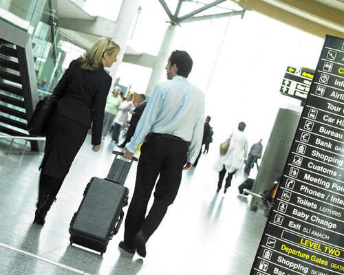
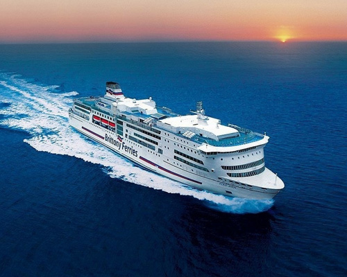

Cork
How to get to Cork
There are many ways to get to Cork including by air, sea, road, and rail.
By Air
Our airport is located just 10 minutes from Cork City centre. Bus and taxi services are available just outside the arrivals area. Cork Airport offers direct flights from almost 50 destinations around Europe and a direct transatlantic flight to North America. For a full list of inbound flights visit Cork Airport's website.
By Sea

Located just 15km from Cork City centre, our ferry terminal offers easy access to and from
mainland Europe. Brittany
Ferries operate daily services between Cork-Roscoff (France) and Cork-Santander in
(Spain).
Cork is also accessible via ferry from Rosslare and Dublin. Both ports offer daily services
between Ireland-UK
and are just a 3-hour drive away via car/bus. Operators at these ports include Irish Ferries,
Stenaline and P&O Ferries.